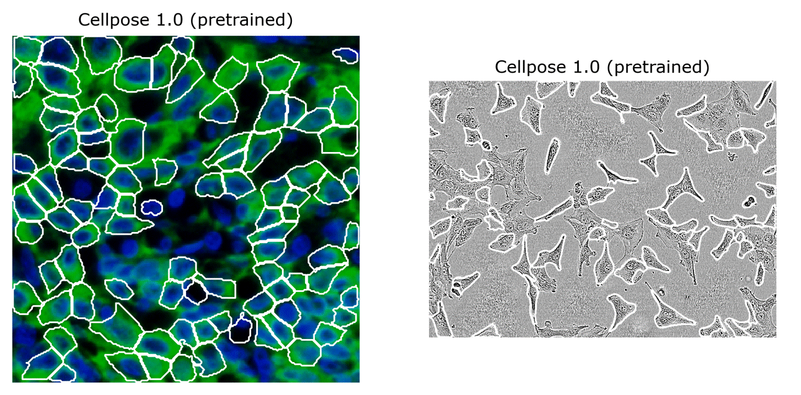
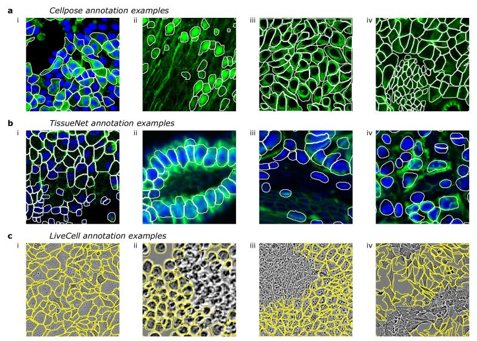
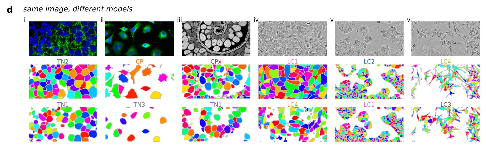
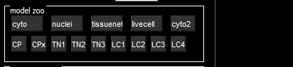
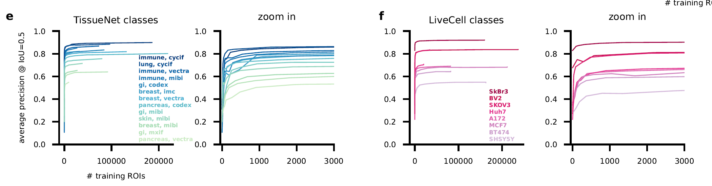
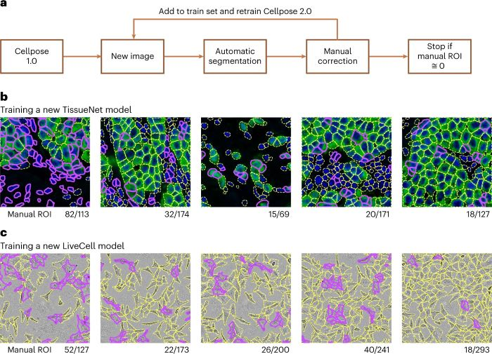
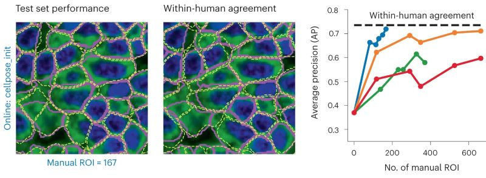

Cellpose 2.0: how to train your own model
Software for users to quickly and easily create accurate segmentation models for their own data.
Abstract
Pretrained neural network models for biological segmentation can provide good out-of-the-box results for many image types. However, such models do not allow users to adapt the segmentation style to their specific needs and can perform suboptimally for test images that are very different from the training images. Here we introduce Cellpose 2.0, a new package that includes an ensemble of diverse pretrained models as well as a human-in-the-loop pipeline for rapid prototyping of new custom models. We show that models pretrained on the Cellpose dataset can be fine-tuned with only 500–1,000 user-annotated regions of interest (ROI) to perform nearly as well as models trained on entire datasets with up to 200,000 ROI. A human-in-the-loop approach further reduced the required user annotation to 100–200 ROI, while maintaining high-quality segmentations. We provide software tools such as an annotation graphical user interface, a model zoo and a human-in-the-loop pipeline to facilitate the adoption of Cellpose 2.0.
This is an upgrade to Cellpose; if you’re unfamiliar with Cellpose, check it out here.
Cellpose 2.0 thread:
- You can now train your own state-of-the-art models in less than 1 hour, all from the GUI. Massive improvements for some images!

Cellpose 1.0 is great, but we were getting reports of imperfect segmentations on some image categories, e.g. on some new large-scale datasets, like TissueNet and LiveCell (see the two images above).
As we dove into these datasets, we realized that different people just segment cells in different ways. Here are some representative examples from different datasets:

Notice how in different images more or less of the cytoplasm is segmented? Or how nuclei may or may not be segmented when they don’t have cytoplasm? Or how too dense regions are sometimes not annotated? The list goes on and on.
It’s impossible for a single model like Cellpose 1.0 to segment the same image in multiple ways. For this we had to build multiple models with different segmentation styles, i.e.:

All these segmentation styles are available in Cellpose 2.0 at the click of a button. Try them out!

This led us to think more carefully about personalized models for everyone. The main challenge is that deep learning typically requires a lot of training data…
Except it doesn’t. Not necessarily. When we initialize with Cellpose 1.0, a new model can be trained with ~500 segmented ROIs. The gains beyond that are minimal.

And we can further reduce the training data requirement to 100-200 ROIs simply with a human-in-the-loop approach, where the user fixes the mistake of the algorithm instead of segmenting from scratch.

As the user segments more, new models are trained that require even fewer corrections. Within a few iterations, very competitive models can be trained, which match human performance (see blue curve below):

Here’s our human-in-the-loop pipeline in action. We start by correcting the mistakes of Cellpose 1.0 (2x speedup)
Then we train a new model on the single image we just segmented:
After ~30 minutes, the user trains the fifth model, and this provides great results on various new images:
See the entire 30 minute procedure on youtube.
Final reveal: I [Marius] was the “human-in-the-loop” for all experiments! It’s actually quite fun. Try it out and please send us more training data via upload in the GUI.
code: https://github.com/MouseLand/cellposeThe End.